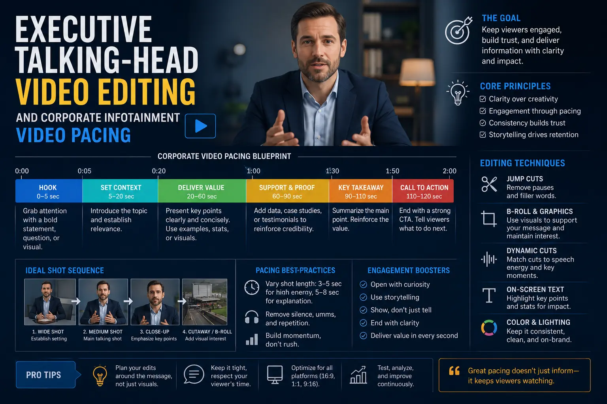
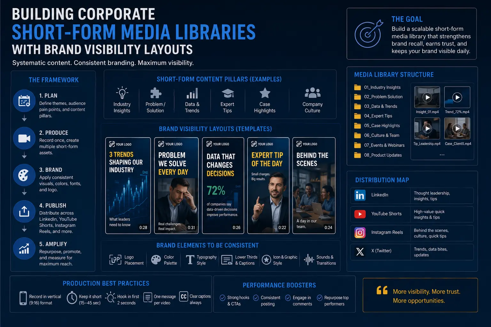

Studio Editing Blueprints That Turn Technical Corporate Data into Viral LinkedIn Media
The Attention Battle: Why Traditional Corporate Media Fails on Modern Feeds
In the contemporary B2B market, capturing the attention of decision-makers has become one of the most complex obstacles for enterprise brands. Historically, corporate communication on professional platforms like LinkedIn was dominated by dry press releases, stock-photo-heavy announcements, and static executive headshots. However, as vertical video has evolved from a consumer entertainment format into a core marketing channel, B2B brands are experiencing a massive shift. Today, organic distribution algorithms favor dynamic, high-retention media. If your brand relies on traditional methods, you are missing a massive opportunity to build trust, authority, and organic pipeline. To solve this, leading enterprise brands are investing in professional Social Media Content Creation that transforms complex spreadsheets, product whitepapers, and operational data into high-performing LinkedIn video assets.
The core challenge for executives is not a lack of valuable information, but rather how that information is packaged. B2B decision-makers, venture capitalists, and enterprise buyers are still human beings who scroll their social feeds during short breaks. They have the same short attention spans as consumer-market audiences, yet they require high-value, accurate, and substantive data to justify their attention. When you present this technical data in a slow, unedited format, you lose the audience within the first few seconds. To turn dry metrics into engaging digital media, video editors must apply systematic studio editing blueprints. By utilizing frameworks like Corporate Infotainment Video Pacing and Executive talking-head video editing, corporate marketing teams can build highly engaging feeds that drive measurable pipeline.
By transitioning from slow, standard corporate recordings to dynamic video, companies can create a highly predictable authority engine. This method enables founders and executives to share their insights without dedicating several hours every day to content production. Instead, by using structured systems, a professional team can capture a month's worth of raw media in a single studio session. The raw footage is then processed using Short-Form Visual Asset Slicing to create multiple vertical videos that fit modern feeds. These edited assets are eventually organized into extensive corporate short-form media libraries that keep the company's social channels active with premium content, establishing the foundation for successful B2B Social Media Content Creation.
The Rules of Engagement: Understanding Corporate Infotainment Video Pacing
To succeed on LinkedIn, corporate video content must bridge the gap between high-level industry expertise and modern visual pacing. This editing style is known as Corporate Infotainment Video Pacing. It combines dense, professional insights with the dynamic editing techniques popular among consumer-facing creators. Traditional corporate videos are often paced slowly, with long pauses, static frames, and minimal visual variety. In contrast, infotainment pacing structures the edit to maintain high visual stimulation without sacrificing the intellectual depth of the technical message.
The pacing of a B2B video is defined by the rate of visual transitions. Editors follow a blueprint that requires a visual cut or visual reset every 1.5 to 3 seconds. These resets can include a change in camera angle, a kinetic caption pop-up, a graphic overlay illustrating a metric, or a dynamic zoom transition that emphasizes a key word. By implementing Corporate Infotainment Video Pacing, the video prevents the viewer's brain from losing focus, keeping them engaged through complex data explanations. Additionally, editors use sound design—such as subtle risers, digital swooshes, and paper crinkles—to punctuate visual transitions. When applied correctly, these elements turn dense reports into entertaining, educational media assets that drive high-quality engagement.
The ultimate goal of Corporate Infotainment Video Pacing is to increase viewer retention. LinkedIn’s algorithm closely tracks dwell time—the duration that a user spends looking at a post or watching a video. If a user drops off in the first five seconds, the algorithm restricts the video’s reach. However, if the editing pacing maintains high engagement throughout the entire video, the algorithm will distribute the post to a wider audience of professionals, turning a technical clip into one of your highest-performing assets.
Retention Optimization
Dynamic cuts and kinetic captions keep B2B buyers engaged through complex technical explanations.
Authority Positioning
Premium editing elevates raw technical metrics into polished, thought-provoking executive content.
Production Efficiency
Turn single presentation shoots into structured short-form libraries with systematic post-production workflows.
Algorithmic Dwell Time
Engaging visual pacing encourages viewers to watch until the final second, boosting search and feed reach.

Executive Talking-Head Video Editing: Moving Beyond the Static Frame
The foundation of most corporate video campaigns is the raw talking-head recording of a founder, CEO, or subject-matter expert. However, raw recordings are rarely fit for immediate social media distribution. They are often filled with verbal pauses, awkward transitions, and long explanations that fail to retain viewers. This is why Executive talking-head video editing is a critical component of the B2B media pipeline.
A professional editor uses several key blueprints to transform raw talking-head footage. First, the editor executes a "paper edit" or script-level cut to eliminate filler words, redundant phrases, and unnatural pauses. This is followed by visual pacing corrections using "zoom cuts" or scale jumps. Instead of keeping the camera frame identical throughout the video, the editor scales the frame up by 10% to 15% on key declarations. This zoom cut serves as a visual pattern that signals importance to the viewer's brain, making it feel as though the video was shot with a multi-camera setup.
Furthermore, Executive talking-head video editing integrates visual elements like B-roll overlays and slide graphics. Rather than just watching a speaker explain a software dashboard, the editor overlays a screen recording of the dashboard in action, utilizing a smooth zoom to highlight specific data points. By combining the human element of the executive's voice with clear, dynamic visual evidence, the content becomes far more persuasive and readable, elevating the presentation to the level of high-engagement business videos.
Color grading and audio mastering are also essential aspects of Executive talking-head video editing. Studios apply color science to ensure that skin tones look natural, colors pop without looking overly saturated, and lighting looks professional even if shot in a home office. For audio, editors use compression, gating, and equalization to eliminate room echo and background noise, ensuring that the executive’s voice sounds rich, clear, and authoritative on all devices.
Designing Thumb-Stopping Visual Patterns for Technical Explanations
To get a busy professional to stop scrolling their feed, a video must immediately present visual signals that promise value. In social media marketing, these are referred to as thumb-stopping visual patterns. When a user is rapidly scrolling, a standard talking-head video can look like just another generic corporate lecture. To disrupt this behavior, editors design specific visual elements that indicate high-quality production and structured value.
One of the most effective thumb-stopping visual patterns is the high-contrast progress bar. A thin, branded line animates across the top or bottom of the video, showing the progress of the clip. This subtle visual indicator sets expectations, showing the viewer that the insight will be delivered quickly. Another pattern is the bold, static header bar at the top of the vertical frame. This header states the core value proposition or question of the video—such as "How to Cut API Latency by 40%"—ensuring that even if a user has their sound muted, they instantly understand the topic of the video.
Additionally, editors use pop-up code blocks, highlighted text overlays, and mock spreadsheet interfaces that animate as the executive references them. These patterns are designed to stand out against the blue and white interface of LinkedIn. By contrasting clean, minimalist studio footage with sharp, colorful data visualizations, editors create a visual signature that makes the brand's content instantly recognizable in the feed. Implementing these thumb-stopping visual patterns ensures that even sound-off viewers can follow along and absorb the key takeaways, boosting the overall impact of your B2B Social Media Content Creation.
The Infrastructure: Sprints, Slicing, and Media Libraries
Creating daily content for LinkedIn is a significant operational challenge if attempted on a week-to-week basis. Executives cannot afford to spend hours filming video clips every few days. The solution is to organize high-volume content production sprints. A production sprint is a structured recording session where the production crew, directors, and the executive collaborate to film a large volume of content in a single day.
A typical production sprint is scheduled for 4 to 6 hours. During this session, the executive records 15 to 20 scripted outlines. To ensure the final assets look like they were recorded over multiple weeks, the team plans wardrobe changes, swaps backgrounds, and adjusts camera angles between scripts. This structured approach captures a massive volume of raw material in a single day, maximizing the executive's time investment.
Once the sprint is complete, the post-production team begins Short-Form Visual Asset Slicing. This workflow involves taking the master recordings and slicing them into shorter, vertical clips designed for LinkedIn, YouTube Shorts, and Instagram Reels. Each slice focuses on a single, clean thought, structured with a clear hook, a detailed body, and a call to action. By relying on structured Short-Form Visual Asset Slicing, companies extract maximum value from every minute of recording time.
These sliced assets are then organized and cataloged into digital corporate short-form media libraries. These media libraries serve as a centralized hub for the company's marketing team. They contain final, platform-optimized videos categorized by theme, target audience, and campaign. By building and maintaining corporate short-form media libraries, enterprise brands can ensure a consistent publishing schedule, repurpose high-performing assets for sales enablement, and support multi-channel social media campaigns.
Optimizing for Mobile with Brand Visibility Layouts
A common mistake in short-form video production is failing to optimize the visual composition for the mobile viewing experience. On platforms like LinkedIn, the user interface overlays—such as the profile picture, post description, reaction buttons, and comment counts—cover a significant portion of the screen. If a video's captions, logos, or charts are placed in these overlay zones, they become unreadable, ruining the user experience and lowering engagement.
To prevent this, editors design videos using strict brand visibility layouts. A brand visibility layout defines safe zones within the vertical 9:16 frame. Editors keep all critical visual information—including subtitles, charts, and key graphic callouts—within the middle 60% of the screen. The top 20% and bottom 20% are kept clear of critical text, allowing platform UI elements to overlay the video without covering key insights.
Furthermore, brand visibility layouts incorporate cohesive brand framing. This includes using standardized margins, custom font hierarchies, and branded color palettes for all visual assets. By ensuring that every video follows these layout guidelines, the brand presents a clean, professional visual style that stands out on mobile screens. This attention to detail builds trust with corporate buyers, ensuring that your content functions as a tool for delivering high-engagement business videos.
Pre-Production Sprint
- Scripting data-driven hooks and structuring talking points into brief, punchy sections.
- Preparing graphic assets, slide decks, and code blocks to be used as post-production overlays.
- Planning multiple outfit changes and setup configurations to build visual variety.
Precision Post-Production
- Applying Executive talking-head video editing techniques to remove verbal pauses.
- Adding kinetic captions, animated infographics, and progress tracking bars.
- Optimizing visual zones using mobile-safe brand visibility layouts.
Strategic Slicing & Storage
- Executing Short-Form Visual Asset Slicing on long-form master files.
- Organizing output videos into searchable corporate short-form media libraries.
- Scheduling consistent content posts to feed the LinkedIn distribution algorithm daily.

Measuring Performance and Iterating on Video Blueprints
A successful B2B video campaign is never a guessing game; it is a process of continuous, data-driven optimization. Once your content is live on LinkedIn, your marketing team must monitor performance metrics to refine future editing blueprints. Key performance indicators like average watch time, click-through rates, and view retention curves provide direct insight into what elements keep your audience engaged.
For example, if the retention curve shows a sharp drop-off in the first 2 seconds, it indicates that the hook was not engaging enough or that the visual pattern failed to capture attention. If the drop-off occurs mid-video, it suggests that the pacing slowed down or that the technical explanation became too complex without supporting graphics. The editing team uses these insights to adjust transitions, speed up pacing, or add more visual overlays in future content sprints. This loop ensures that the brand's media strategy continuously improves, delivering maximum return on investment.
In addition to watch time, comment velocity and share counts are critical metrics for B2B brands. High engagement indicates that the content has sparked a professional conversation, which is highly valued by LinkedIn's distribution algorithm. When executives actively participate in these comment sections, they build relationships, answer questions, and drive viewers further down the sales funnel, turning organic visibility into qualified inbound leads.
Integrating Short-Form Media into B2B Sales Funnels
While organic brand visibility is a valuable goal, the ultimate purpose of B2B content production is to generate revenue. Short-form video assets should not exist in isolation; they must be integrated into the company's broader sales funnel. Sliced assets from your media library can be used by sales representatives as personalized follow-up resources for prospects.
For example, if a prospect asks a technical question during a discovery call, the sales representative can send a highly polished 60-second video from the media library that explains that exact topic. This touchpoint reinforces the company's expertise, demonstrates professionalism, and keeps the conversation moving forward. By leveraging your video assets in sales enablement, you maximize the value of your content, turning social media posts into tools for closing enterprise deals.
To make this process seamless, the marketing team should build an index of the media library. This index allows sales representatives to quickly search for videos by topic, product feature, or client pain point. By making your corporate short-form media libraries easily accessible, you turn content creation from a marketing-only activity into an enterprise-wide tool that drives sales efficiency and revenue growth.
Key Topics
Ready to Turn Dry Corporate Data into Viral B2B Media?
At The PhD Ads in Madurai, we specialize in helping founders, executives, and brands scale their digital presence. From organizing high-volume content production sprints and managing Short-Form Visual Asset Slicing to delivering mobile-safe brand visibility layouts, we provide a complete, managed content engine.
Our customized post-production frameworks like Corporate Infotainment Video Pacing and Executive talking-head video editing are designed to transform your complex raw data into high-engagement business videos. Let us build your corporate short-form media libraries and handle your B2B Social Media Content Creation.
Email: team@e2o.in